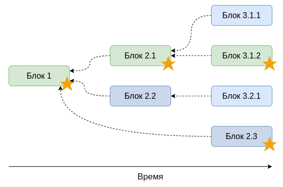

Блокчейн
Андрей Иваницкий
25 июня 2020
Creative Commons Zero 1.0 Universal(Нажмите ? для получения помощи, n и p для следующего и предыдущего слайда соответственно)
1 Криптография
1.1 Криптографическая хэш-функция
Функция свёртки преобразующая строку (сообщение) произвольной длины в строку установленной длины (хэш)
- Детерминистическая
- Быстро вычислить хэш для сообщения
- Неосуществимо подобрать сообщение, дающее заданный хэш
1.1.1 Простая реализация
- Берём сообщение
- Выбираем каждую вторую букву сообщения
- Если результат длиннее 5 символов повторяем шаг 2
1.1.2 Пример
Bitcoin is the Kingсообщение_i_c_i_ _s_t_e_K_n_9 символов___c___ ___t___K___4 символаc tKхэш
1.1.3 Другой пример
tn gхэш___t___n___ ___ ___g_u_t_o_n_i_ _h_ _i_gButtcoin is the Kingсообщение
hash(Bitcoin is the King) = c tK
hash(Buttcoin is the King) = tn g
1.1.4 Простое применение
Алиса предъявляет хэш решения проблемы, без предъявления самого решения
1.1.5 SHA-256
SHA-256 криптографическая хэш-функция используемая в биткоине
>>> hashlib.sha256('Bitcoin').hexdigest() 'b4056df6691f8dc72e56302ddad345d65fead3ead9299609a826e2344eb63aa4'
1.2 Криптографический пазл
Проблема, которую сложно решить, но легко проверить решение
1.2.1 Простая аналогия — Судоку

1.2.2 Подстройка сложности
Больше строк и столбцов — сложнее решить
2 Биткоин блокчейн
База данных биткоин транзакций, организованная в цепь блоков

3 Проблема двойного расходования
Проблема в системах электронных платежей, в которой один и тот же токен может быть потрачен несколько раз
3.1 Централизованное решение
Центральный орган ведёт базу данных
- Любой может читать
- Центральный орган добавляет новые блоки каждые 10 минут
3.1.1 Проблемы
Центральный орган может
- перезаписывать существующие транзакции
- цензурировать транзакции
3.1.2 Синхронизация
Центральный орган служит синхронизирующим механизмом
4 Децентрализованное решение
4.1 Позволим всем добавлять новые блоки
Мы получим дерево, а не цепь…
4.2 Решение
- Сделать это вычислительно сложно (требуя доказательство совершенной работы)
- Только самая длинная1 цепь действительна

4.3 Подстройка сложности
Подстройка количества требуемой работы (сложность) так, чтобы среднее время поиска нового блока для всей сети составляло 10 минут
4.4 Мотивация
Награда
- Субсидия за блок (6.25 биткоинов на июнь 2020)
- Комиссия за транзакции
5 Заключение
Биткоин блокчейн
- Любой может искать блок
- Только блок с необходимой работой является действительным
- Только самая длинная цепь является действительной
- Подстройка сложности для нахождения новых блоков каждые 10 минут